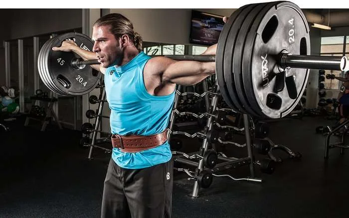
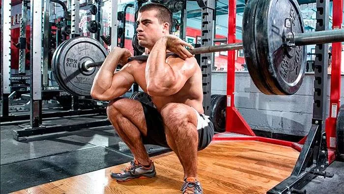
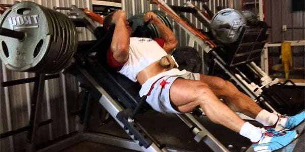
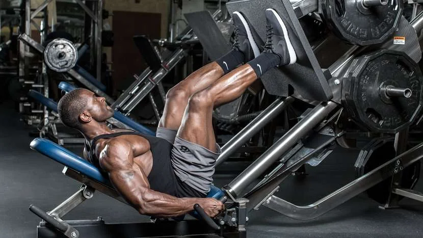
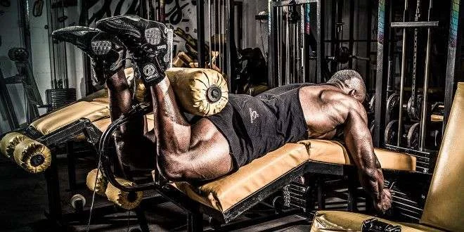
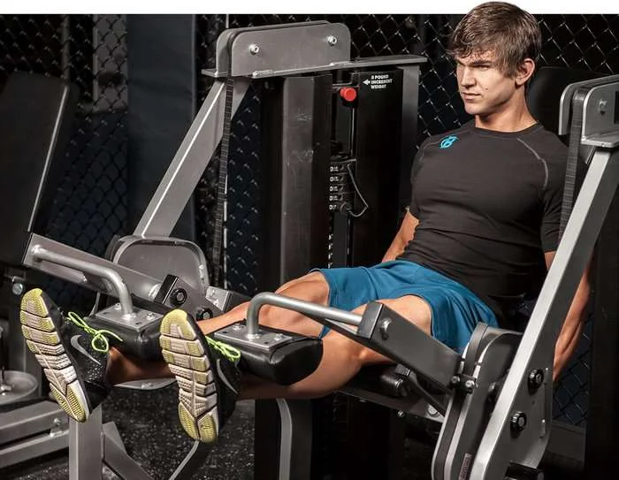

O agachamento livre é o melhor exercicio para pernas.
Todos os músculos do quadriceps,posteriores,glúteos,lombar e panturrilhas,precisam ser recrutados para permitir que voce agache com uma barra carregada de peso nas costas.
É um exercicio muito completo e deve ser a base de qualquer treino de pernas.
Apesar do exercicio possuir a fama de prejudicar a coluna e joelhos,quando é feito corretamente nao haverá problemas.
Na,verdade a execução correta do agachamento fortalecerá vários musculos prevenindo lesões
Apenas tenha certeza que voce esteja descendo a barra no agachamento até onde sua mobilidade permtie
De forma simples, voce deve usar o máximo de amplitude,mas sem que sua coluna perca a curvtura natural durante a execução
O agachamento frontal é um primo próximo do agachamento tradicional, mas com foco (ainda) maior no quadriceps.
Por executarmos o exercicio em uma posição vertical,haverá menos requisição da lombar.
Isto pode ser útil para aqueles que desejam continuar agachando, mas por algum motivo possuem algum problema nessa região.
Apesar de exercicios com pesos livres sempre estarem a frente das máquinas, o agachamento hack possui merito no treino de pernas.
Apesar do uso da máquina, é possivel usar inúmeros posicionamento dos pés que poderao mudar o foco do exercicio.
Além disso. é mais fácil usar técnicas de alta intensidade, como drop sets e super sets, com segurança.Sem temer acidentes.
Leg Press é um ótimo exercicio de pernas para recrutar o quadriceps e até os glúteos (dependendo do posicionamento dos pés).
Contudo é válido deixar muito claro que o leg press nao é um substituto ou uma alternativa equivalente para o agachamento.
Não haverá o mesmo recrutamento muscular, nem mesma liberação de homronios anabólicos (1).
O beneficio do leg press está em sobrecarga os músculos do quadriceps com bastante carga, mas com a possibilidade de usar pegadas diferentes
Apenas evite descer a carga ao ponto do quadril perder o contato com o banco, isto pode causar lesões.
Até agora mostramos apenas exercicios de pernas compostos,mas os isoladores também possuem o seu lugar no treino.
A flexora é o melhor exercicio para isolar os músculos posteriores da coxa.
E é uma otima adição ao treino de pernas, já que a maioria dos exercicios acabam por da ênfase maior ao quadriceps
Em relação a fazer a flexora em pé ou sentado, as diferenças serão sutis demais para optarmos unicamente por uma ou outra.
Ambas recrutarão com eficiência todos os músculos posteriores.Use a que permite maior conforto a carga
Extensora é o equivalente da flexora para o quadriceps
É um otimo exercicio para isolar todos os músculos do quadriceps e é ótimi para "finalizar" o treino
A cadeira extensoraé um exercicio fácil para progredir as cargas, mas pode colocar estresse excessivo na articulaçãp do joelho.
Por isso é recomendado usar a extensora mais tarde no treino, quando oss quadriceps estiverem fadigados
Uma das coisas que a maioria das pessoas erram no treino de pernas é o aquecimento.
Entenda
Aquecimento não é importante "apenas" para prevenir lesões.
Um aquecimento adequadovai preparar o seu corpo e sistema nervoso central pelo o que está por vir, permitindo que você treine mais pesado.
Uma análise dos 32 (trintas e dois!) maiores estudos sobre aquecimento antes de atividade fisica mostrou que em todos os casos, o aquecimento antes do treino melhora a performance e segurança (5).
Basicamente, pessoas que não fazem aquecimento e vão direto para o treino pesado, além de estarem treinando em um nivel abaixo do que poderiam (se estivessem aquecidas), estão sob maior risco de lesão.
E claro, você pode treinar por anos sem aquecimento e nunca ter problemas.
Assim como pode fumar um maço de cigarro por dia e nao ter câncer.
Em ambos os casos, você estará assumindo riscos totalmente desnecessários.
Enfim, um aquecimento adequado para o treino de pernas envolve fazer 5 a 10 minutos de uma atividade aeróbica leve como pedalar ou caminhar
Com o objetivo de aumentar a ciruclação sanguinea nos membros inferiores e elevar a temperatura corporal
Em seguida, faça algumas séries de aquecimento usando o primeiro exercicio do dia.
Agachamento é o exercicio para pernas com o maior potencial para construir massa muscular, principalmente quando focado na tensão mecânica.
Em outras palavras, você precisa agachar pesado com foco no aumento de cargas e fazer isso sempre no primeiro treino enquanto você ainda conta com toda energia possivel.
Veja bem.
Tensão mecânica é um dos gatilho mmais poderosos para estimular a hipertrofia muscular.
Este estimulo subtmete os músculos a sobrecarga, causando microtraumas ao mesmo tempo força o recrutamento do maior número possivel de fibras para que a carga possa ser levantada.
Use carga suficiente para que a oitaa repetiçao seja sempre muito difiil de ser completada
Lembre-se que o foco aqui não é gerar inchaço muscular, mas sobrecarregar os músculos com carga
Dois minutos de descanso permitirão maior recuperaçao de ATP para que você use o máximo de carga possivel em todas as séries.
Estresse metabólico é gerado quando utilizamos um número de repetições elevado e curto periodo de descanso entre as séries.
Algo que causa a famosa sensação de queimação e inchaço muscular.
Acontece que estresse metabólico também é um gatilho importante para a hipertrofia e precisa ser incorporado no treino de pernas.
E um ótimo exercicio para causar estresse metabólico é o leg press
Este número de repetições com descanso reduzido fará com que você reduza as cargas de forma significativa,mas amplificará o estresse metabólico, que é o nosso objetivo aqui.
Lembre-se de usar uma carga que seja possivel realizar o exercicio com amplitude completa, onde a última repetição seja dificil de ser completada.
Se isso exigir que você use 15kg de cada lado, que assim seja.Você está treinando os músculos,e não o ego.
Stiff é um exercicio importante para trabalhar os posteriores de um ângulo onde podemos focar na negativa e alongamento.
Use um minuto de descanso entre as séries.
você não precisa tentar forçar o máximo de amplitude ao popnto de perder a posição natural da coluna.
E se não possuir mobilidade suficiente para deixar os joelhos esticados na descida.
Sinta-se livre para dobrar levemente os joelhos (sempre mantendo a coluna em posição natural).
Depois de agachar pesado e fazer uma série insana para leg-press, é provável que você já esteja com as pernas "bambas" ao fazer stiff, portanto cuidado com as cargas.
Escolha uma carga relativamente leve e foquese na qualidade do movimento, principalmente na negativs, onde exigirá muito dos posteriores.
Fazer extensora com isometria fará você querer finalizar o treino de pernas mais cedo.
Logo de cara,saiba que isso é normal.
Faça três com 10 repetições cada usando um minuto de descanso entre as séries
Com o detalhe que você escolherá uma carga para chegar muito próximo da falha na décima repetição.
Porém antes de finalizar a série, você fará isometria no Meio da repetição por segundos.
Em outras palavras, você fará a série normalmente até não conseguir realizar mais repetições com qualidade.
Mas,antes de finalizar a série, fará uma isometria na metade do caminho de volta de 8 segundos.
Aqui você dará tudo o que pode para ter certeza absoluta que conseguiu fazer seus posteriores sejam realmente estressados.
Posteriores precisam sofrer tanto quando o quadriceps para que não haja desiquilibrio muscular.
E na maioria dos treinos para perna acabamos por focar demais nos quadriceps.
Além disso, posteriores poderão dar centimetros as pernas tanto no quadriceps e jamais deverão ser negligenciados.
Isto é importante porque nesta altura do treino, é muito provável que você queira descartar este exercicio e ir para casa antes.
Mas agora você sabe que estará abrindo mão de uma parte importante do treinamento.
Somente na última série, quando atingir a falha, faça um drop, atinja a falha novamente e faça um outro drop.
| Exercicio | Séries | Repetições | Descanso(em segundos) |
|---|---|---|---|
| Agachamento livre | 3 | 8 repetições | 120 |
| Leg press | 3 | 12 repetições | 45 |
| Stiff | 3 | 8 com negativas de 3-5 segundos | 60 |
| Extensora | 3 | 10 repetições na ultima | 60 |
| Flexora | 3 com dois drops na última | 10 repetições | 60 |
Por mais que você tenha acesso aos melhores exercicios para perna e um bom treino para incorporá-los,isto ainda não é o suficiente.
Nem mesmo o melhor treino do mundo vai funcionar se você não estiver forçando seu corpo a se adaptar.
Para isto precisamos nos focar no progresso de carga.
Primeiramente, carga não é necessariamente peso, mas sim a carga total que o seu corpo está sendo capaz de tolerar e isto deve aumentar com o tempo para estimular uma adaptação por parte do corpo.
Isto significa que a cada treino precisamos forçar o nosso corpo a fazer mais.
Do contrário, simplesmente não haverá razão ou lógica para o seu corpo se adaptar, ficando maior e mais forte.
Para conseguir isso, a maneira mais simples é tentar usar mais peso nos exercícios.
A cada semana procure adicionar carga, mesmo que isto significa aumentar 1kg.
Progresso é progresso, não importa se estamos levantando 1 ou 10kg a mais a cada semana.
E mesmo que você esteja usando uma técnica que obrigue você a usar pouca carga em um exercício, esta carga ainda precisa evoluir.
Quando não for possível subir a carga, tente fazer mais repetições (com o máximo de carga).
Por exemplo: se você faz agachamento com 100kg por 10 repetições e não consegue aumentar o peso.
Fazer 11 repetições com os mesmos 100kg também estimulará mais hipertrofia, pois você está obrigando o seu corpo a realizar mais trabalho da mesma forma.
A mensagem que precisamos tatuar no cérebro é que precisamos buscar sempre mais no treino.
Além disso, não podemos deixar de lado o aspecto que vai permitir que isto aconteça.
Estamos falando da nutrição.
Sem a devida nutrição não será possível se recuperar dos treinos, e quanto mais pesado você treina, mais você precisa de nutrientes para se recuperar.
Treinar pesado sem o suporte da nutrição, é como construir uma casa sem o suporte necessário.
Ela vai desabar assim que houver qualquer estresse além do normal.
Portando seguir uma dieta para hipertrofia adequada é essencial para seguir este treino(e qualquer outro)
Usando estes exercícios e treino de pernas de forma séria e em conjunto de uma dieta, será possível gerar resultados como você nunca viu antes.
Apenas tome cuidado caso não tenha experiência para realizar os exercícios sozinho.
Sempre faça exercícios com o auxilio do professor – ele está lá justamente para isso.
Referências